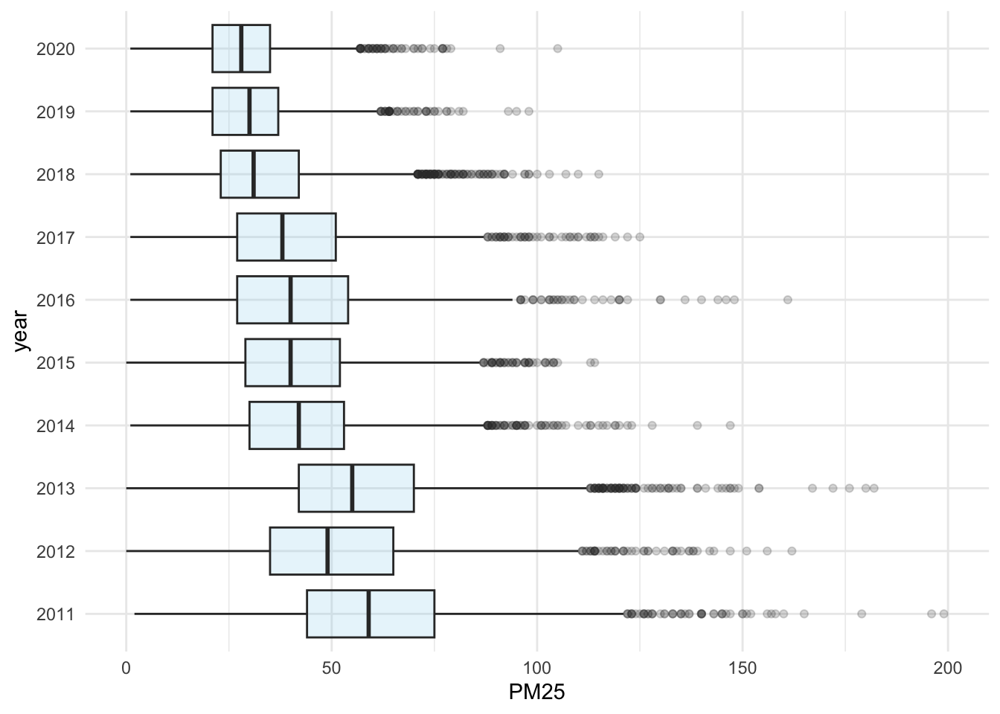

Chapter 23 Case Studies (Taiwan)
23.1 TW AQI Visual Studies
library(tidyverse)## ── Attaching core tidyverse packages ──────────────────────── tidyverse 2.0.0 ──
## ✔ dplyr 1.1.0 ✔ readr 2.1.4
## ✔ forcats 1.0.0 ✔ stringr 1.5.0
## ✔ ggplot2 3.4.1 ✔ tibble 3.1.8
## ✔ lubridate 1.9.2 ✔ tidyr 1.3.0
## ✔ purrr 1.0.1
## ── Conflicts ────────────────────────────────────────── tidyverse_conflicts() ──
## ✖ dplyr::filter() masks stats::filter()
## ✖ dplyr::lag() masks stats::lag()
## ℹ Use the ]8;;http://conflicted.r-lib.org/conflicted package]8;; to force all conflicts to become errorslibrary(readxl)
# options(stringsAsFactors = F)23.1.1 eda-load-data-from-github
# aqi_data <- read_rds("https://github.com/p4css/R4CSS/raw/master/data/AQI_Chaozhou.rds")
aqi_data <- read_rds("data/AQI_Chaozhou.rds")23.1.2 Trending: Central tendency
toplot <- aqi_data %>%
arrange(日期)%>%
filter(æ¸¬é …=="PM2.5") %>%
gather("hour", "PM25", 4:28) %>%
mutate(PM25 = as.numeric(PM25)) %>%
drop_na() %>%
group_by(日期) %>%
summarize(avg = mean(PM25)) %>%
ungroup() %>%
mutate(year = lubridate::year(日期),
month = lubridate::month(日期)) %>%
group_by(year, month) %>%
summarize(avg = mean(avg)) %>%
ungroup()## Warning: There was 1 warning in `mutate()`.
## ℹ In argument: `PM25 = as.numeric(PM25)`.
## Caused by warning:
## ! NAs introduced by coercion## `summarise()` has grouped output by 'year'. You can override using the
## `.groups` argument.Counting data by month and plotting to ensure the degree of data loss.
aqi_data %>%
filter(æ¸¬é …=="PM2.5") %>%
arrange(日期)%>%
gather("hour", "PM25", 4:28) %>%
mutate(PM25 = as.numeric(PM25)) %>%
drop_na() %>%
group_by(日期) %>%
summarize(avg = mean(PM25)) %>%
ungroup() %>%
arrange(日期) %>%
mutate(year = lubridate::year(日期),
month = lubridate::month(日期)) %>%
count(year, month) %>%
mutate(rn = row_number()) %>%
ggplot() + aes(rn, n) +
geom_line() + theme_minimal()## Warning: There was 1 warning in `mutate()`.
## ℹ In argument: `PM25 = as.numeric(PM25)`.
## Caused by warning:
## ! NAs introduced by coercion
- 科普å°å¸å ‚-空氣ä¸çš„懸浮粒å
- 台灣PM2.5三大é¢å‘：空汙ç¾æ³å¤šåš´é‡ï¼Ÿè¦æ€ªä¸åœ‹é‚„是怪自己？ - 第 1 頁 - The News Lens 關鍵評論網
library(gghighlight)
toplot %>%
mutate(month = as.character(month)) %>%
group_by(month) %>%
arrange(year) %>%
# mutate(diff = avg -first(avg),
# month = as.character(month)) %>%
# ungroup() %>%
ggplot() + aes(year, avg, color = month) +
geom_line() +
# geom_point() +
gghighlight(month %in% c("11", "12", "1", "2", "3")) +
theme_minimal()## Warning: Tried to calculate with group_by(), but the calculation failed.
## Falling back to ungrouped filter operation...## label_key: month
23.1.3 Trending: Extreme value
toplot2 <- aqi_data %>%
arrange(日期)%>%
filter(æ¸¬é …=="PM2.5") %>%
gather("hour", "PM25", 4:28) %>%
mutate(PM25 = as.numeric(PM25)) %>%
drop_na() %>%
group_by(日期) %>%
summarize(avg = sum(PM25)/24) %>%
ungroup() %>%
mutate(year = lubridate::year(日期), month = lubridate::month(日期)) %>%
group_by(year, month) %>%
summarize(purple = sum(avg>150),
red = sum(avg>54),
orange = sum(avg>35)) %>%
ungroup()## Warning: There was 1 warning in `mutate()`.
## ℹ In argument: `PM25 = as.numeric(PM25)`.
## Caused by warning:
## ! NAs introduced by coercion## `summarise()` has grouped output by 'year'. You can override using the
## `.groups` argument.toplot2 %>%
mutate(month = as.character(month)) %>%
group_by(month) %>%
arrange(year) %>%
ggplot() + aes(year, orange, color = month) +
geom_line() +
# geom_point() +
gghighlight(month %in% c("11", "12", "1", "2", "3")) +
ylab("Days (PM25 > 35) in one month") +
theme_minimal()## Warning: Tried to calculate with group_by(), but the calculation failed.
## Falling back to ungrouped filter operation...## label_key: month
toplot3 <- aqi_data %>%
arrange(日期)%>%
filter(æ¸¬é …=="PM2.5") %>%
gather("hour", "PM25", 4:28) %>%
mutate(PM25 = as.numeric(PM25)) %>%
drop_na() %>%
mutate(year = lubridate::year(日期), month = lubridate::month(日期)) %>%
filter(month %in% c(11, 12, 1, 2, 3))## Warning: There was 1 warning in `mutate()`.
## ℹ In argument: `PM25 = as.numeric(PM25)`.
## Caused by warning:
## ! NAs introduced by coerciontoplot3 %>%
mutate(year = as.character(year)) %>%
ggplot() + aes(y=year, x=PM25) +
geom_boxplot(fill="skyblue", alpha=0.2) +
xlim(0, 200) +
theme_minimal()
Wilke, Claus O. 2019. Fundamentals of Data Visualization: A Primer on Making Informative and Compelling Figures. O’Reilly Media.